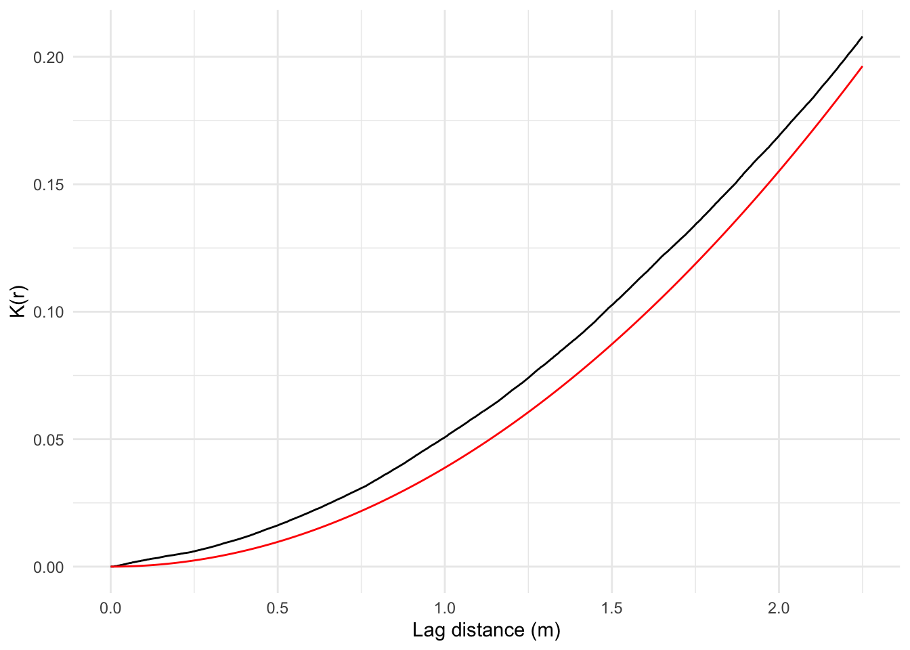
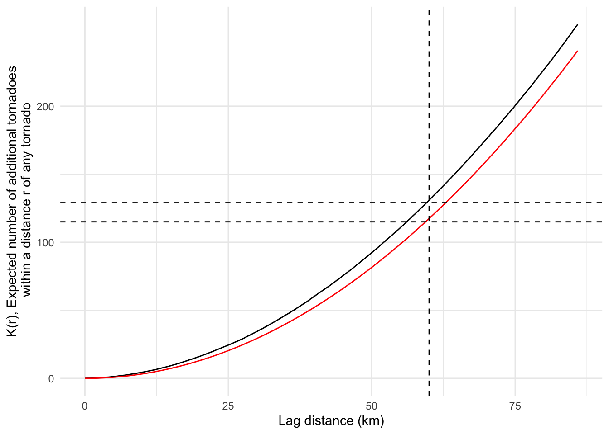
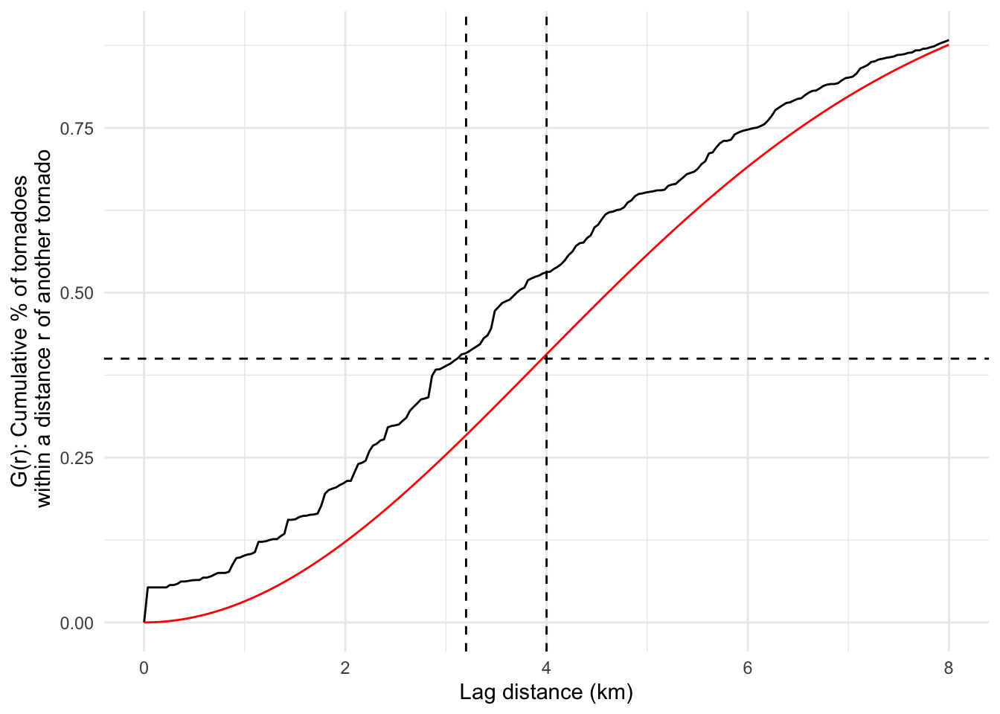
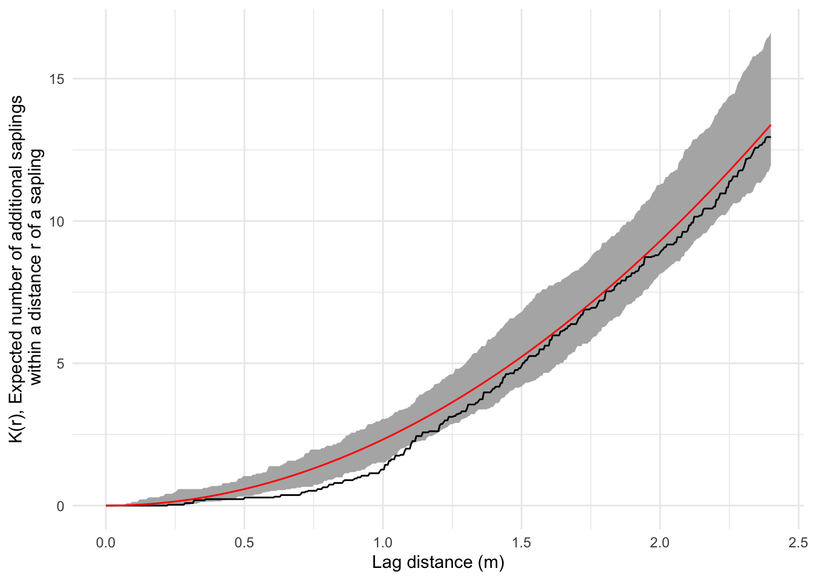
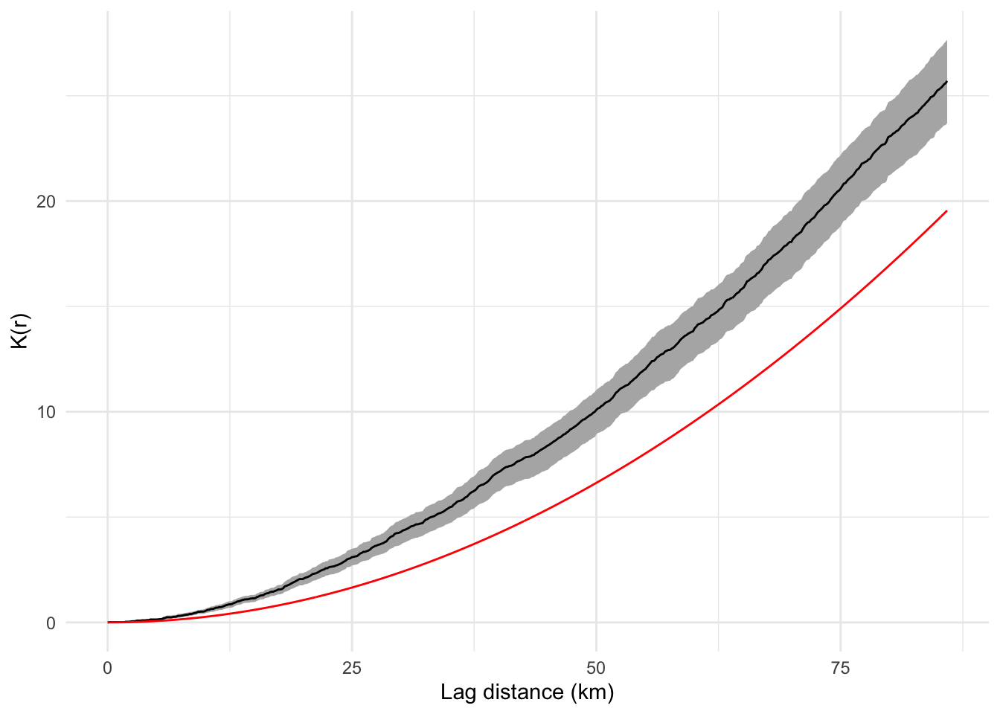

Thursday October 27, 2022
“Good code is its own best documentation. As you’re about to add a comment, ask yourself, ‘How can I improve the code so that this comment isn’t needed?’ Improve the code and then document it to make it even clearer.” - Steve McConnell
Today
- Examples of spatially clustered events
- Determining the statistical significance of event clustering
- Estimating event clustering in multi-type event locations
- More about the Ripley K function
Examples of spatially clustered events
Bramble canes
The locations of bramble canes are available as a marked ppp object in the {spatstat} package. A bramble is a rough (usually wild) tangled prickly shrub with thorny stems.
suppressMessages(library(spatstat))
data(bramblecanes)
summary(bramblecanes)## Marked planar point pattern: 823 points
## Average intensity 823 points per square unit (one unit = 9 metres)
##
## Coordinates are given to 3 decimal places
## i.e. rounded to the nearest multiple of 0.001 units (one unit = 9 metres)
##
## Multitype:
## frequency proportion intensity
## 0 359 0.43620900 359
## 1 385 0.46780070 385
## 2 79 0.09599028 79
##
## Window: rectangle = [0, 1] x [0, 1] units
## Window area = 1 square unit
## Unit of length: 9 metresThe marks represent three different ages (as an ordered factor) for the bramble canes. The unit of length is 9 meters.
plot(bramblecanes) 
Consider the point pattern for all the bramble canes regardless of age and estimate the \(K\) function and a corresponding plot. Plot the empirical estimate of \(K\) with an ‘isotropic’ correction at the domain borders (iso). Include a line for the theoretical \(K\) under the assumption of CSR.
K.df <- bramblecanes |>
Kest() |>
as.data.frame() |>
dplyr::mutate(r = r * 9)
library(ggplot2)
ggplot(data = K.df,
mapping = aes(x = r, y = iso)) +
geom_line() +
geom_line(aes(y = theo), color = "red") +
xlab("Lag distance (m)") + ylab("K(r)") +
theme_minimal()
The \(K\) estimate from the actual data (black line) lies to the left of the theoretical \(K\) under CSR (red line). This means that for any distance from an event (lag distance) there tends to be more events within this distance (larger \(K\)) than expected under CSR. You conclude that these bramble canes are more clustered than CRS.
The expected number of additional events is multiplied by the total number of events (823) so a value of .1 indicates that at a distance of 1.6 meters (where .1 value of \(K(r)\) intersects the red curve) you should expect to see about 82 additional events.
Kansas tornado reports
Previously you mapped the intensity of tornadoes across Kansas using the start locations as point pattern data. Here we return to these data and consider only tornadoes since 1994.
Torn.sf <- sf::st_read(dsn = here::here("data", "1950-2020-torn-initpoint")) |>
sf::st_transform(crs = 3082) |>
dplyr::filter(mag >= 0, yr >= 1994) |>
dplyr::mutate(EF = as.factor(mag)) |>
dplyr::select(EF)## Reading layer `1950-2020-torn-initpoint' from data source
## `/Users/jelsner/Desktop/ClassNotes/ASS-2022/data/1950-2020-torn-initpoint'
## using driver `ESRI Shapefile'
## Simple feature collection with 66244 features and 22 fields
## Geometry type: POINT
## Dimension: XY
## Bounding box: xmin: -163.53 ymin: 17.7212 xmax: -64.7151 ymax: 61.02
## Geodetic CRS: WGS 84T.ppp <- Torn.sf["EF"] |>
as.ppp()
KS.sf <- USAboundaries::us_states(states = "Kansas") |>
sf::st_transform(crs = sf::st_crs(Torn.sf)$proj4string)
W <- KS.sf |>
as.owin()
T.ppp <- T.ppp[W] |>
spatstat.geom::rescale(s = 1000,
unitname = "km")
T.ppp |>
plot()
T.ppp |>
summary()## Marked planar point pattern: 2241 points
## Average intensity 0.01038475 points per square km
##
## *Pattern contains duplicated points*
##
## Coordinates are given to 4 decimal places
##
## Multitype:
## frequency proportion intensity
## 0 1623 0.7242303000 7.520953e-03
## 1 436 0.1945560000 2.020416e-03
## 2 104 0.0464078500 4.819342e-04
## 3 64 0.0285586800 2.965749e-04
## 4 13 0.0058009820 6.024177e-05
## 5 1 0.0004462294 4.633982e-06
##
## Window: polygonal boundary
## single connected closed polygon with 169 vertices
## enclosing rectangle: [1317.6759, 1980.2948] x [7114.969, 7458.57] km
## (662.6 x 343.6 km)
## Window area = 215797 square km
## Unit of length: 1 km
## Fraction of frame area: 0.948There are 2241 events with an average intensity of .01 events per square km (1 tornado per 10 square km over the 26-year period 1994–2020).
You compare the \(K\) function estimated from the set of tornado reports with a theoretical \(K\) function from a model of CSR.
K.df <- T.ppp |>
Kest(correction = "iso") |>
as.data.frame() |>
dplyr::mutate(Kdata = iso * sum(intensity(T.ppp)),
Kpois = theo * sum(intensity(T.ppp)))
ggplot(data = K.df,
mapping = aes(x = r, y = Kdata)) +
geom_line() +
geom_line(mapping = aes(y = Kpois), color = "red") +
geom_vline(xintercept = 60, lty = 'dashed') +
geom_hline(yintercept = 129, lty = 'dashed') +
geom_hline(yintercept = 115, lty = 'dashed') +
xlab("Lag distance (km)") + ylab("K(r), Expected number of additional tornadoes\n within a distance r of any tornado") +
theme_minimal()
Consider the lag distance of 60 km along the horizontal axis. If you draw a vertical line at that distance it intersects the black curve at a height of about 129. This value indicates that at a distance of 60 km from a random tornado report about 129 other tornado reports are in the vicinity (on average).
Imagine placing a disc with radius 60 km centered on each event and then averaging the number of events under the disc over all events.
The red line is the theoretical curve under the assumption that the tornado reports are CSR across the state. If this is the case then you would expect to see about 115 tornadoes within a distance 60 km from any tornado (on average). Since there are MORE tornadoes than expected within a given 60 km radius you conclude that there is evidence for clustering (at this spatial scale).
The black line lies above the red line across distances from 0 to greater than 100 km.
How do you interpret the results of applying the nearest neighbor function to these data? Here you create a data frame from the output of the Gest() function and remove distances exceeding 8 km.
G.df <- T.ppp |>
Gest(correction = "km") |>
as.data.frame() |>
dplyr::filter(r < 8)
ggplot(data = G.df,
mapping = aes(x = r, y = km)) +
geom_line() +
geom_line(aes(y = theo), color = "red") +
geom_hline(yintercept = .4, lty = 'dashed') +
geom_vline(xintercept = c(3.2, 4), lty = 'dashed') +
xlab("Lag distance (km)") + ylab("G(r): Cumulative % of tornadoes\n within a distance r of another tornado") +
theme_minimal()
The interpretation is that 40% (\(G\) = .4) of all tornado reports have another report within a distance of about 3.2 km on average. If the reports where homogeneous Poisson (CSR) then the distance would be 4 km. We conclude they are more clustered.
Note: With a data set containing many events the difference between the raw and border-corrected estimates of the distance functions is typically small.
Determining the statistical significance of event clustering
The plots show a separation between the black solid line and the red line, but is this separation large relative to sampling variation? Is the above difference between the empirical and theoretical distance functions (e.g., \(G\)) large enough to conclude there is significant clustering?
There are two ways to approach statistical inference. 1) Compare the function computed with the observed data against the function computed data generated under the null hypothesis and ask: does the function fall outside the envelope of functions from the null cases? 2) Get estimates of uncertainty on the function and ask: does the uncertainty interval contain the null case?
With the first approach you take a ppp object and then compute the function of interest (e.g., Ripley’s K) for a specified number of samples under the null hypothesis of a homogeneous Poisson process.
To make things run faster you consider a subset of all the tornadoes (those that have an EF rating of 2 or higher). You create a new ppp object that contains only tornadoes rated at least EF2. Since the marks is a factor vector you can’t use >=.
ST.ppp <- unmark(T.ppp[T.ppp$marks == 2 |
T.ppp$marks == 3 |
T.ppp$marks == 4 |
T.ppp$marks == 5])
plot(ST.ppp)
The envelope() method from the {spatstat} package is used on this new ST.ppp object. You specify the function with the fun = Kest argument and the number of samples with the nsim = argument. You then convert the output to a data frame. It takes a few seconds to complete the computation of \(K\) for all 99 samples.
Kenv.df <- envelope(ST.ppp,
fun = Kest,
nsim = 99) |>
as.data.frame()## Generating 99 simulations of CSR ...
## 1, 2, 3, 4, 5, 6, 7, 8, 9, 10, 11, 12, 13, 14, 15, 16, 17, 18, 19, 20, 21, 22, 23, 24, 25, 26, 27, 28, 29, 30, 31, 32, 33, 34, 35, 36, 37, 38, 39, 40,
## 41, 42, 43, 44, 45, 46, 47, 48, 49, 50, 51, 52, 53, 54, 55, 56, 57, 58, 59, 60, 61, 62, 63, 64, 65, 66, 67, 68, 69, 70, 71, 72, 73, 74, 75, 76, 77, 78, 79, 80,
## 81, 82, 83, 84, 85, 86, 87, 88, 89, 90, 91, 92, 93, 94, 95, 96, 97, 98, 99.
##
## Done.head(Kenv.df)## r obs theo lo hi
## 1 0.0000000 0.00000 0.00000000 0 0.00000
## 2 0.1677738 13.10164 0.08842974 0 11.40878
## 3 0.3355477 13.10164 0.35371897 0 11.40878
## 4 0.5033215 13.10164 0.79586769 0 12.54270
## 5 0.6710954 13.10164 1.41487589 0 13.54574
## 6 0.8388692 13.10164 2.21074358 0 24.29327The resulting data frame contains estimates of Ripley’s \(K\) as a function of lag distance (r) (column labeled obs). It also has the estimates of \(K\) under the null hypothesis of CSR (theo) and the lowest (lo) and highest (hi) values of \(K\) across the 99 samples.
You plot this information using the geom_ribbon() layer to include a gray ribbon around the model of CSR.
ggplot(data = Kenv.df,
mapping = aes(x = r, y = obs * intensity(ST.ppp))) +
geom_ribbon(mapping = aes(ymin = lo * intensity(ST.ppp),
ymax = hi * intensity(ST.ppp)), fill = "gray70") +
geom_line() +
geom_line(aes(y = theo * intensity(ST.ppp)), color = "red") +
xlab("Lag distance (km)") + ylab("K(r)") +
theme_minimal()
The \(K\) function computed on the data is the black line and the \(K\) function under CSR is the red line. The uncertainty ribbon (gray band) connects the point-wise minimum and maximum values of \(K\) computed from the 99 generated point pattern samples.
Since the black line lies outside the gray band you can confidently conclude that the tornado reports are more clustered than one would expect by chance.
If the specific intention is to test a null hypothesis of CSR, then a single statistic indicating the departure of \(K\) computed on the observations from the theoretical \(K\) is appropriate.
One such statistic is the maximum absolute deviation (MAD) and is implemented with the mad.test() function from the {spatstat} package. The function performs a hypothesis test for goodness-of-fit of the observations to the theoretical model. The larger the value of the statistic, the less likely it is that the data are CSR.
mad.test(ST.ppp,
fun = Kest,
nsim = 99)## Generating 99 simulations of CSR ...
## 1, 2, 3, 4, 5, 6, 7, 8, 9, 10, 11, 12, 13, 14, 15, 16, 17, 18, 19, 20, 21, 22, 23, 24, 25, 26, 27, 28, 29, 30, 31, 32, 33, 34, 35, 36, 37, 38, 39, 40,
## 41, 42, 43, 44, 45, 46, 47, 48, 49, 50, 51, 52, 53, 54, 55, 56, 57, 58, 59, 60, 61, 62, 63, 64, 65, 66, 67, 68, 69, 70, 71, 72, 73, 74, 75, 76, 77, 78, 79, 80,
## 81, 82, 83, 84, 85, 86, 87, 88, 89, 90, 91, 92, 93, 94, 95, 96, 97, 98, 99.
##
## Done.##
## Maximum absolute deviation test of CSR
## Monte Carlo test based on 99 simulations
## Summary function: K(r)
## Reference function: theoretical
## Alternative: two.sided
## Interval of distance values: [0, 85.9002061907829] km
## Test statistic: Maximum absolute deviation
## Deviation = observed minus theoretical
##
## data: ST.ppp
## mad = 7297.2, rank = 1, p-value = 0.01The maximum absolute deviation is 7297 which is very large so the \(p\)-value is small and you reject the null hypothesis of CSR for these data. This is consistent with the graph. Note: Since there are 99 simulations the lowest \(p\)-value is .01.
Another test statistic is related to the sum of the squared deviations between the estimated and theoretical functions. It is implemented with the dclf.test() function.
dclf.test(ST.ppp,
fun = Kest,
nsim = 99)## Generating 99 simulations of CSR ...
## 1, 2, 3, 4, 5, 6, 7, 8, 9, 10, 11, 12, 13, 14, 15, 16, 17, 18, 19, 20, 21, 22, 23, 24, 25, 26, 27, 28, 29, 30, 31, 32, 33, 34, 35, 36, 37, 38, 39, 40,
## 41, 42, 43, 44, 45, 46, 47, 48, 49, 50, 51, 52, 53, 54, 55, 56, 57, 58, 59, 60, 61, 62, 63, 64, 65, 66, 67, 68, 69, 70, 71, 72, 73, 74, 75, 76, 77, 78, 79, 80,
## 81, 82, 83, 84, 85, 86, 87, 88, 89, 90, 91, 92, 93, 94, 95, 96, 97, 98, 99.
##
## Done.##
## Diggle-Cressie-Loosmore-Ford test of CSR
## Monte Carlo test based on 99 simulations
## Summary function: K(r)
## Reference function: theoretical
## Alternative: two.sided
## Interval of distance values: [0, 85.9002061907829] km
## Test statistic: Integral of squared absolute deviation
## Deviation = observed minus theoretical
##
## data: ST.ppp
## u = 1548888704, rank = 1, p-value = 0.01Again the \(p\)-value on the test statistic against the two-sided alternative is less than .01.
Compare these test results on tornado report clustering with test results on pine sapling clustering in the swedishpines data set.
SP <- swedishpines
Kenv.df <- envelope(SP,
fun = Kest,
nsim = 99) |>
as.data.frame()## Generating 99 simulations of CSR ...
## 1, 2, 3, 4, 5, 6, 7, 8, 9, 10, 11, 12, 13, 14, 15, 16, 17, 18, 19, 20, 21, 22, 23, 24, 25, 26, 27, 28, 29, 30, 31, 32, 33, 34, 35, 36, 37, 38, 39, 40,
## 41, 42, 43, 44, 45, 46, 47, 48, 49, 50, 51, 52, 53, 54, 55, 56, 57, 58, 59, 60, 61, 62, 63, 64, 65, 66, 67, 68, 69, 70, 71, 72, 73, 74, 75, 76, 77, 78, 79, 80,
## 81, 82, 83, 84, 85, 86, 87, 88, 89, 90, 91, 92, 93, 94, 95, 96, 97, 98, 99.
##
## Done.ggplot(data = Kenv.df,
mapping = aes(x = r * .1, y = obs * intensity(SP))) +
geom_ribbon(aes(ymin = lo * intensity(SP),
ymax = hi * intensity(SP)),
fill = "gray70") +
geom_line() + geom_line(aes(y = theo * intensity(SP)),
color = "red") +
xlab("Lag distance (m)") +
ylab("K(r), Expected number of additional saplings\n within a distance r of a sapling") +
theme_minimal()
At short distances (closer than about 1 m) the black line is below the red line and outside the gray ribbon which you interpret to mean that there are fewer pine saplings near other pine saplings than would be expected by chance at this scale. This ‘regularity’ might be the result of competition among the saplings.
At larger distances the black line is close to the red line and inside the gray ribbon which you interpret to mean that, at this larger spatial scale, the distribution of pine saplings is indistinguishable from CSR.
Based on the fact that much of the black line is within the gray envelope you might anticipate that a formal test against the null hypothesis of CSR will likely fail to reject.
mad.test(SP,
fun = Kest,
nsim = 99)## Generating 99 simulations of CSR ...
## 1, 2, 3, 4, 5, 6, 7, 8, 9, 10, 11, 12, 13, 14, 15, 16, 17, 18, 19, 20, 21, 22, 23, 24, 25, 26, 27, 28, 29, 30, 31, 32, 33, 34, 35, 36, 37, 38, 39, 40,
## 41, 42, 43, 44, 45, 46, 47, 48, 49, 50, 51, 52, 53, 54, 55, 56, 57, 58, 59, 60, 61, 62, 63, 64, 65, 66, 67, 68, 69, 70, 71, 72, 73, 74, 75, 76, 77, 78, 79, 80,
## 81, 82, 83, 84, 85, 86, 87, 88, 89, 90, 91, 92, 93, 94, 95, 96, 97, 98, 99.
##
## Done.##
## Maximum absolute deviation test of CSR
## Monte Carlo test based on 99 simulations
## Summary function: K(r)
## Reference function: theoretical
## Alternative: two.sided
## Interval of distance values: [0, 24] units (one unit = 0.1 metres)
## Test statistic: Maximum absolute deviation
## Deviation = observed minus theoretical
##
## data: SP
## mad = 150.69, rank = 25, p-value = 0.25dclf.test(SP,
fun = Kest,
nsim = 99)## Generating 99 simulations of CSR ...
## 1, 2, 3, 4, 5, 6, 7, 8, 9, 10, 11, 12, 13, 14, 15, 16, 17, 18, 19, 20, 21, 22, 23, 24, 25, 26, 27, 28, 29, 30, 31, 32, 33, 34, 35, 36, 37, 38, 39, 40,
## 41, 42, 43, 44, 45, 46, 47, 48, 49, 50, 51, 52, 53, 54, 55, 56, 57, 58, 59, 60, 61, 62, 63, 64, 65, 66, 67, 68, 69, 70, 71, 72, 73, 74, 75, 76, 77, 78, 79, 80,
## 81, 82, 83, 84, 85, 86, 87, 88, 89, 90, 91, 92, 93, 94, 95, 96, 97, 98, 99.
##
## Done.##
## Diggle-Cressie-Loosmore-Ford test of CSR
## Monte Carlo test based on 99 simulations
## Summary function: K(r)
## Reference function: theoretical
## Alternative: two.sided
## Interval of distance values: [0, 24] units (one unit = 0.1 metres)
## Test statistic: Integral of squared absolute deviation
## Deviation = observed minus theoretical
##
## data: SP
## u = 106917, rank = 17, p-value = 0.17Both return a \(p\)-value that is greater than .15 so you fail to reject the null hypothesis of CSR.
In the second approach to inference the procedure of re-sampling is used. Note the distinction: Re-sampling refers to generating samples from the data while sampling, as above, refers to generating samples from some theoretical model.
The bootstrap procedure is a re-sampling strategy whereby new samples are generated from the data by randomly choosing events within the domain. An event that is chosen for the ‘bootstrap’ sample gets the chance to be chosen again (called ‘with replacement’). The number of events in each bootstrap sample must equal the number of events in the data.
Consider 15 numbers from 1 to 15. Then pick randomly from that set of numbers with replacement until the sample size is 15 to create a bootstrap sample.
( x <- 1:15 )## [1] 1 2 3 4 5 6 7 8 9 10 11 12 13 14 15sample(x, replace = TRUE)## [1] 7 3 4 11 1 10 9 8 3 11 5 11 12 10 15Some numbers get picked more than once and some do not get picked at all.
The average of the original 15 x values is 8 but the average over the set of numbers in the bootstrap sample will not necessarily be 8. However, the distribution of the averages over many bootstrap samples will be centered close to this average.
mx <- NULL
for(i in 1:99){
mx[i] <- mean(sample(x, replace = TRUE))
}
mx.df <- as.data.frame(mx)
ggplot(data = mx.df,
mapping = aes(mx)) +
geom_density() +
geom_vline(xintercept = mean(x),
color = "red")
The important thing is that the bootstrap distribution provides an estimate of the uncertainty on the computed mean through the range of possible average values.
In this way, the lohboot() function estimates the uncertainty on the computed spatial statistic using a bootstrap procedure. It works by computing a local version of the function (e.g., localK()) on the set of re-sampled events.
Kboot.df <- ST.ppp |>
lohboot(fun = Kest) |>
as.data.frame()## 1, 2, 3, 4.6.8.10.12.14.16.18.20.22.24.26.28.30.32.34.36.38.40
## .42.44.46.48.50.52.54.56.58.60.62.64.66.68.70.72.74.76.78.80
## .82.84.86.88.90.92.94.96.98.100.102.104.106.108.110.112.114.116.118.120
## .122.124.126.128.130.132.134.136.138.140.142.144.146.148.150.152.154.156.158.160
## .162.164.166.168.170.172.174.176.178.180. 182.ggplot(data = Kboot.df,
mapping = aes(x = r, y = iso * intensity(ST.ppp))) +
geom_ribbon(aes(ymin = lo * intensity(ST.ppp),
ymax = hi * intensity(ST.ppp)), fill = "gray70") +
geom_line() +
geom_line(aes(y = theo * intensity(ST.ppp)), color = "red") +
xlab("Lag distance (km)") + ylab("K(r)") +
theme_minimal()
Now the uncertainty band is plotted about the black line (\(K\) function computed on the observations) rather than about the null model (red line). The 95% uncertainty band does to include the CSR model so you confidently conclude that the tornadoes in Kansas are more clustered than chance.
Repeating for the Swedish pine saplings.
Kboot.df <- SP |>
lohboot(fun = Kest) |>
as.data.frame()## 1, 2, 3, 4, 5, 6, 7, 8, 9, 10, 11, 12, 13, 14, 15, 16, 17, 18, 19, 20, 21, 22, 23, 24, 25, 26, 27, 28, 29, 30, 31, 32, 33, 34, 35, 36, 37, 38, 39, 40,
## 41, 42, 43, 44, 45, 46, 47, 48, 49, 50, 51, 52, 53, 54, 55, 56, 57, 58, 59, 60, 61, 62, 63, 64, 65, 66, 67, 68, 69, 70, 71.ggplot(Kboot.df, aes(x = r * .1, y = iso * intensity(SP))) +
geom_ribbon(aes(ymin = lo * intensity(SP),
ymax = hi * intensity(SP)), fill = "gray70") +
geom_line() +
geom_line(aes(y = theo * intensity(SP)), color = "blue", lty = 'dashed') +
xlab("Lag distance (m)") + ylab("K(r)") +
theme_minimal()
At short distances (closer than about 1.5 m) the gray ribbon is below the blue line which you interpret to mean that there are fewer pine saplings near other pine saplings than would be expected by chance at this scale indicating regularity.
Estimating event clustering in multi-type event locations
Often the interest focuses on whether the occurrence of one event type influences (or is influenced by) another event type. For example, does the occurrence of one species of tree influence the occurrence of another species?
Analogues to the \(G\) and \(K\) functions are available for ‘multi-type’ point patterns where the marks are factors.
A common statistic for examining ‘cross correlation’ of event type occurrences is the cross \(K\) function \(K_{ij}(r)\), which estimates the expected number of events of type \(j\) within a distance \(r\) of type \(i\).
Consider the data called lansing from the {spatstat} package that contains the locations of 2,251 trees of various species in a wooded lot in Lansing, MI as a ppp object.
data(lansing)
summary(lansing)## Marked planar point pattern: 2251 points
## Average intensity 2251 points per square unit (one unit = 924 feet)
##
## *Pattern contains duplicated points*
##
## Coordinates are given to 3 decimal places
## i.e. rounded to the nearest multiple of 0.001 units (one unit = 924 feet)
##
## Multitype:
## frequency proportion intensity
## blackoak 135 0.05997335 135
## hickory 703 0.31230560 703
## maple 514 0.22834300 514
## misc 105 0.04664594 105
## redoak 346 0.15370950 346
## whiteoak 448 0.19902270 448
##
## Window: rectangle = [0, 1] x [0, 1] units
## Window area = 1 square unit
## Unit of length: 924 feetThe data are a multi-type planar point pattern with the marks indicating tree species. There are 135 black oaks, 703 hickories, etc. The spatial unit is 924 feet.
Compute and plot the cross \(K\) function for Maple and Hickory trees.
Kc.df <- lansing |>
Kcross(i = "maple",
j = "hickory") |>
as.data.frame()
ggplot(data = Kc.df,
mapping = aes(x = r, y = iso)) +
geom_line() +
geom_line(aes(y = theo), color = "red") +
geom_vline(xintercept = .2, lty = 'dashed') +
geom_hline(yintercept = .093, lty = 'dashed') +
geom_hline(yintercept = .125, lty = 'dashed') +
xlab("Distance") + ylab("Kc(r)") +
theme_minimal()
The vertical axis is the number of hickory trees within a radius r of a maple tree divided by the average intensity of the hickories. So at a distance of .2 (.2 x 924 ft = 180 ft) from a random maple there is an average of roughly 65 hickories (.093 x 703 hickories). If hickory and maple trees are CSR you would expect about 88 maples (.125 * 703) within that distance.
The presence of a hickory tree reduces the likelihood that a maple tree will be nearby.
Do the same for the EF1 and EF3 tornadoes in Kansas.
plot(Kcross(T.ppp,
i = "1",
j = "3"))
abline(v = 70)
abline(h = 18700)
abline(h = 15500)
Kc.df <- T.ppp |>
Kcross(i = "1",
j = "3") |>
as.data.frame()
ggplot(data = Kc.df,
mapping = aes(x = r, y = iso)) +
geom_line() +
geom_line(aes(y = theo), color = "red") +
geom_vline(xintercept = 70, lty = 'dashed') +
geom_hline(yintercept = 18700, lty = 'dashed') +
geom_hline(yintercept = 15500, lty = 'dashed') +
xlab("Distance") + ylab("Kc(r)") +
theme_minimal()
The vertical axis is the number of EF3 tornadoes within a radius r of an EF1 tornado divided by the average intensity of the EF3 tornadoes. At a distance of 70 km from a random EF1 tornado there are on average 18500 x .000296 = 5.5 EF3 tornadoes. If EF1 and EF3 tornadoes are CSR then you would expect, on average, somewhat fewer EF3 tornadoes in the vicinity of EF1 tornadoes (15500 x .000296 = 4.6).
You can see this more clearly by using the envelope() function with the fun = Kross. You first use the subset() method with drop = TRUE to make a new ppp object with only those two groups.
T.ppp13 <- subset(T.ppp,
marks == "1" |
marks == "3",
drop = TRUE)
Kcenv.df <- T.ppp13 |>
envelope(fun = Kcross,
nsim = 99) |>
as.data.frame()## Generating 99 simulations of CSR ...
## 1, 2, 3, 4, 5, 6, 7, 8, 9, 10, 11, 12, 13, 14, 15, 16, 17, 18, 19, 20, 21, 22, 23, 24, 25, 26, 27, 28, 29, 30, 31, 32, 33, 34, 35, 36, 37, 38, 39, 40,
## 41, 42, 43, 44, 45, 46, 47, 48, 49, 50, 51, 52, 53, 54, 55, 56, 57, 58, 59, 60, 61, 62, 63, 64, 65, 66, 67, 68, 69, 70, 71, 72, 73, 74, 75, 76, 77, 78, 79, 80,
## 81, 82, 83, 84, 85, 86, 87, 88, 89, 90, 91, 92, 93, 94, 95, 96, 97, 98, 99.
##
## Done.ggplot(data = Kcenv.df,
mapping = aes(x = r, y = obs)) +
geom_ribbon(aes(ymin = lo, ymax = hi), fill = "gray70") +
geom_line() +
geom_line(aes(y = theo), color = "red", lty = 'dashed') +
xlab("Lag distance (km)") + ylab("Kc(r)") +
theme_minimal()
And you can formally test as before using the mad.test() function.
mad.test(T.ppp13, fun = Kcross, nsim = 99)## Generating 99 simulations of CSR ...
## 1, 2, 3, 4, 5, 6, 7, 8, 9, 10, 11, 12, 13, 14, 15, 16, 17, 18, 19, 20, 21, 22, 23, 24, 25, 26, 27, 28, 29, 30, 31, 32, 33, 34, 35, 36, 37, 38, 39, 40,
## 41, 42, 43, 44, 45, 46, 47, 48, 49, 50, 51, 52, 53, 54, 55, 56, 57, 58, 59, 60, 61, 62, 63, 64, 65, 66, 67, 68, 69, 70, 71, 72, 73, 74, 75, 76, 77, 78, 79, 80,
## 81, 82, 83, 84, 85, 86, 87, 88, 89, 90, 91, 92, 93, 94, 95, 96, 97, 98, 99.
##
## Done.##
## Maximum absolute deviation test of CSR
## Monte Carlo test based on 99 simulations
## Summary function: "K"["1", "3"](r)
## Reference function: theoretical
## Alternative: two.sided
## Interval of distance values: [0, 85.9002061907829] km
## Test statistic: Maximum absolute deviation
## Deviation = observed minus theoretical
##
## data: T.ppp13
## mad = 4234.6, rank = 1, p-value = 0.01dclf.test(T.ppp13, fun = Kcross, nsim = 99)## Generating 99 simulations of CSR ...
## 1, 2, 3, 4, 5, 6, 7, 8, 9, 10, 11, 12, 13, 14, 15, 16, 17, 18, 19, 20, 21, 22, 23, 24, 25, 26, 27, 28, 29, 30, 31, 32, 33, 34, 35, 36, 37, 38, 39, 40,
## 41, 42, 43, 44, 45, 46, 47, 48, 49, 50, 51, 52, 53, 54, 55, 56, 57, 58, 59, 60, 61, 62, 63, 64, 65, 66, 67, 68, 69, 70, 71, 72, 73, 74, 75, 76, 77, 78, 79, 80,
## 81, 82, 83, 84, 85, 86, 87, 88, 89, 90, 91, 92, 93, 94, 95, 96, 97, 98, 99.
##
## Done.##
## Diggle-Cressie-Loosmore-Ford test of CSR
## Monte Carlo test based on 99 simulations
## Summary function: "K"["1", "3"](r)
## Reference function: theoretical
## Alternative: two.sided
## Interval of distance values: [0, 85.9002061907829] km
## Test statistic: Integral of squared absolute deviation
## Deviation = observed minus theoretical
##
## data: T.ppp13
## u = 402609991, rank = 1, p-value = 0.01Both tests lead you to conclude that EF3 tornadoes are more likely near EF1 tornadoes than would be expected if they were independently CSR.
More about the Ripley K function
Compute Ripley \(K\) and look at the classes of the resulting object.
K <- Kest(T.ppp)
class(K)## [1] "fv" "data.frame"It has two classes fv and data.frame. It is a data frame but with additional attribute information. You focus on the data frame portion.
K.df <- as.data.frame(K)
head(K.df)## r theo border trans iso
## 1 0.0000000 0.00000000 0.000000 0.000000 0.000000
## 2 0.1677738 0.08842974 5.586056 5.588550 5.588550
## 3 0.3355477 0.35371897 6.118072 6.104416 6.104416
## 4 0.5033215 0.79586769 6.745407 6.792237 6.792237
## 5 0.6710954 1.41487589 7.264284 7.308103 7.308103
## 6 0.8388692 2.21074358 7.963272 7.995925 7.995925In particular you want the values of r and iso. The value of iso times the average spatial intensity is the number of tornadoes within a distance r.
You add this information to the data frame.
K.df <- K.df |>
dplyr::mutate(nT = summary(T.ppp)$intensity * iso)Suppose you are interested in the average number of tornadoes at a distance of exactly 50 km. Use the approx() function to interpolate the value of nT at a distance of 50 km.
approx(x = K.df$r,
y = K.df$nT,
xout = 50)$y## [1] 92.39087Finally, the variance stabilized Ripley \(K\) function called the \(L\) function is often used instead of \(K\). The sample version of the \(L\) function is defined as \[ \hat{L}(r) = \Big( \hat{K}(r)/\pi\Big)^{1/2}. \]
For data that is CSR, the \(L\) function has expected value \(r\) and its variance is approximately constant in \(r\). A common plot is a graph of \(r - \hat{L}(r)\) against \(r\), which approximately follows the horizontal zero-axis with constant dispersion if the data follow a homogeneous Poisson process.